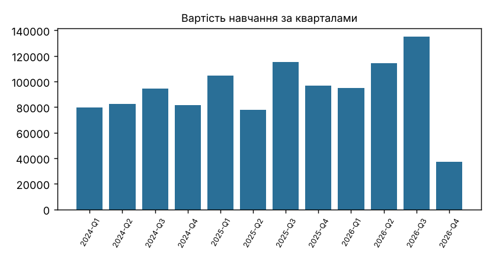
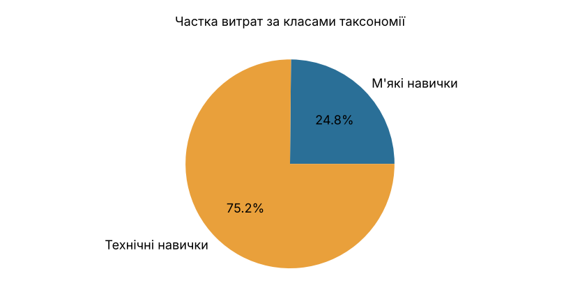
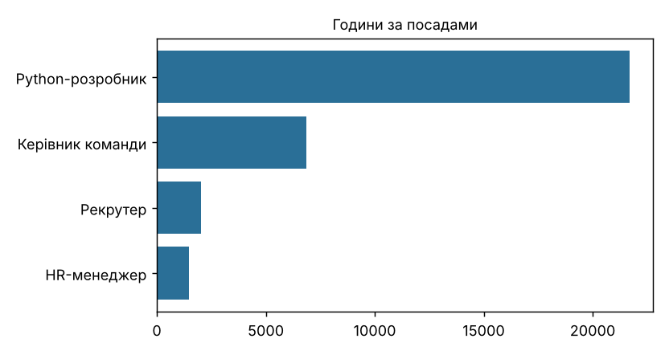
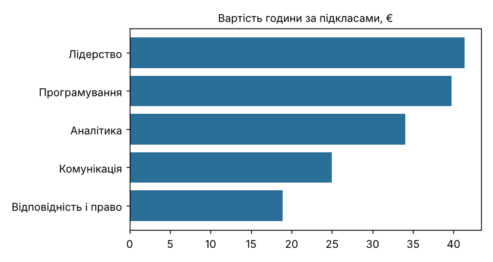

Витрати зростають: пік 2026-Q3 (≈134,9 тис. €). 2026-Q4 неповний (дані лише до 31.10).

Технічні навички — 75,2 % витрат, м'які — 24,8 %.

Python-розробники — 21 699 год із 32 066 (≈68 %): навчання сконцентроване в одній ролі.

Найдорожча година — Лідерство (≈41,4 €), найдешевша — Відповідність і право (≈18,9 €).